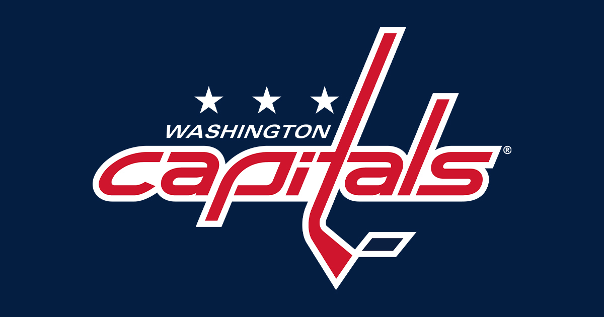
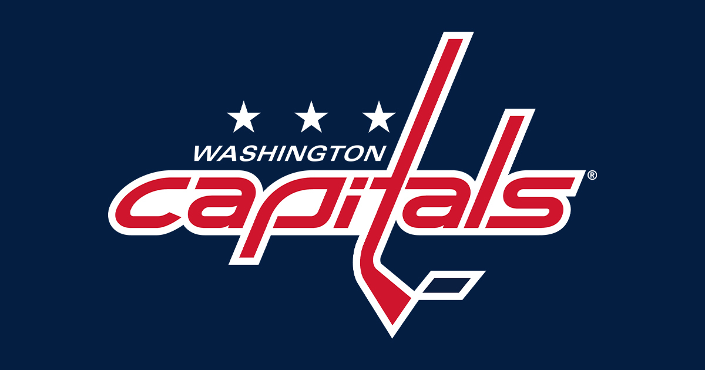

Athletics


 



 Growing up, I loved to play sports both with friends and competitively. As a young kid I played soccer during the Fall, basketball during the Winter, and baseball during the Spring. But as I got older, baseball turned into my main sport. Playing since I was 5 in a tee-ball league coached by my Dad to playing for McDonogh up until my senior year of high school, baseball was always a way for me to enjoy being in a team environment. All sports promote teamwork, competitiveness, comradery, and commitment which are some of the core reasons why I fell in love with baseball.
Growing up, I loved to play sports both with friends and competitively. As a young kid I played soccer during the Fall, basketball during the Winter, and baseball during the Spring. But as I got older, baseball turned into my main sport. Playing since I was 5 in a tee-ball league coached by my Dad to playing for McDonogh up until my senior year of high school, baseball was always a way for me to enjoy being in a team environment. All sports promote teamwork, competitiveness, comradery, and commitment which are some of the core reasons why I fell in love with baseball.